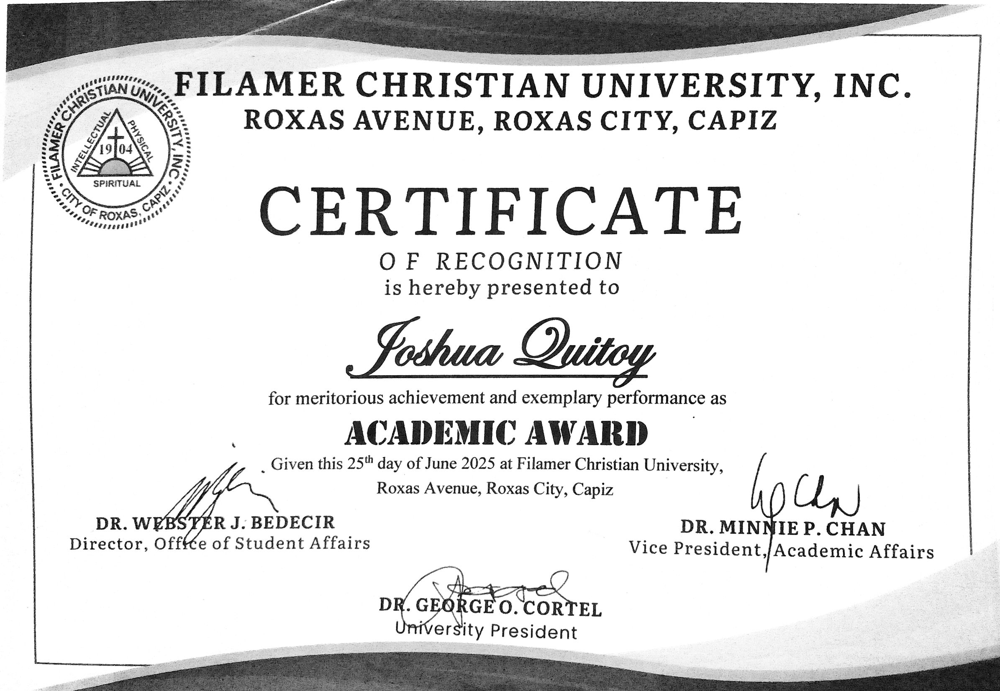
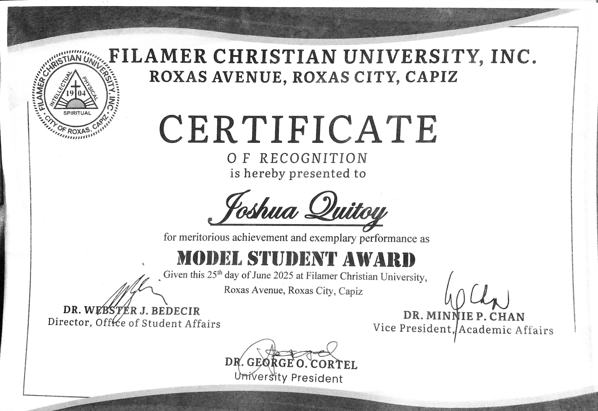
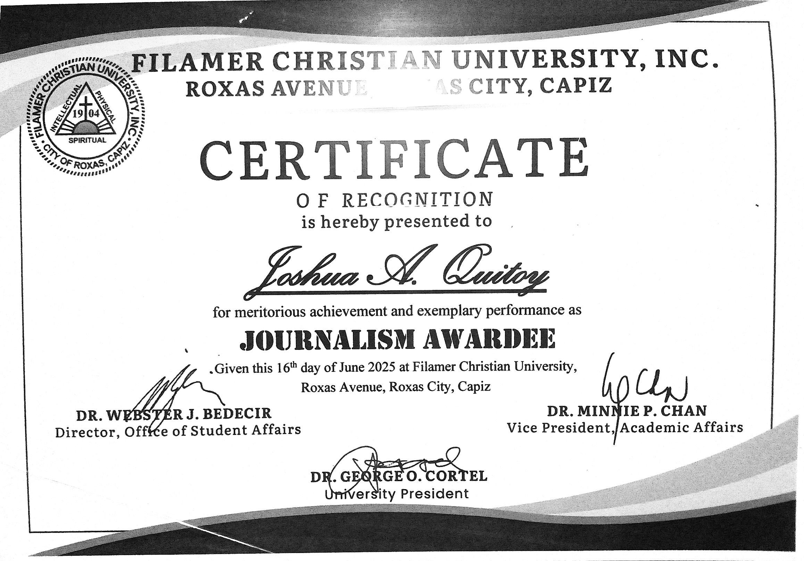

Joshua Quitoy
Roxas City, Philippines
Bachelor of Science in Computer Science
📧 joshuaquitoy22@gmail.com
🔗 linkedin.com/in/joshua-quitoy-46b884349
🌐 jquitoy.github.io/quitoy_portfolio
Professional Portfolio • 2026
Roxas City, Philippines
Bachelor of Science in Computer Science
📧 joshuaquitoy22@gmail.com
🔗 linkedin.com/in/joshua-quitoy-46b884349
🌐 jquitoy.github.io/quitoy_portfolio
Professional Portfolio • 2026
Professional Summary & Qualifications
Roxas City, Philippines • joshuaquitoy22@gmail.com • linkedin.com/in/joshua-quitoy-46b884349
Computer Science student and campus journalist passionate about the intersection of technology, narrative, and impact. I bridge the gap between complex research and public understanding, aiming to develop and communicate innovations that solve tangible, real-world problems. Driven by curiosity and a commitment to evidence-based solutions.
Filamer Christian University, Roxas City
The Hillside Echo
The Hillside Echo
The Hillside Echo
The Hillside Echo - Senior High School
• First Place, Feature Writing (English) - PIA VI COPRE 2025
• First Place, Best Layout Tabloid - PIA VI COPRE 2025
• First Place, Research Presenter - SHS Colloquium 2023
• Academic Awardee - 2024, 2025
• Model Student Awardee - 2024, 2025
• Journalism Awardee - 2024, 2025
Top 3 Academic Achievements

Filamer Christian University • 2025

Filamer Christian University • 2025

Filamer Christian University • 2025
Top 3 Development Projects

Project Manager / Full-Stack Developer / Technical Writer • 2025
A comprehensive workflow automation tool designed to streamline content publishing and staff coordination for online activities. Features an intuitive dashboard for managing posts, scheduling content, assigning tasks, and tracking progress of online campaigns.

Project Manager / Front-End Developer • 2024
A premium real estate showcase website designed to highlight luxury residential properties. Features elegant design, smooth animations, and an intuitive user interface for exploring high-end residences with detailed property information.

UI/UX Designer • 2023
An e-commerce platform concept designed for university merchandise and supplies. Features a clean, user-friendly interface optimized for student purchases with streamlined checkout process.
For more information and complete portfolio, please visit:
jquitoy.github.io/quitoy_portfolio
📧 joshuaquitoy22@gmail.com
📱 09123456789